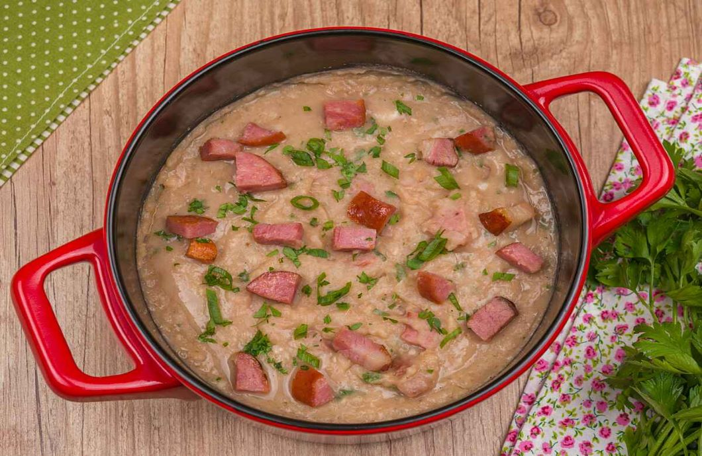

Tutu de Feijão

Receita
Massa
- 500 g de feijão cozido
- 150 ml de água
- farinha a gosto (pois tem gente que não gosta muito)
- sal e pimenta-do-reino a gosto
- 1 cubo de sabor feijão
- 100 g bacon picado em cubos pequenos
- 100 g calabresa picada em cubos médios
- tempero verde à gosto
- 1 colher de sopa de alho desidratado
- 2 colheres de sopa de cebola granulada
Cobertura
- Bata no liquidificador o feijão, a água e a farinha e reserve.
- Em uma panela frite a calabresa, o bacon, a cebola e o alho.
- Acrescente o feijão, o sal, a pimenta-do-reino e o cubo de tempero.
- Misture e deixe no fogo (acrescente água aos poucos se precisar).
- Por fim acrescente o tempero verde e sirva da forma que desejar.